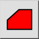
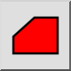
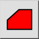
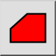

Pole wieloboku
Pasek narzędziowy / ikona:
 

Menu: Informacja > Pole wieloboku
Skrót: I, R
Polecenia: infoarea | ir
Jest to tłumaczenie automatyczne.
Pasek narzędziowy / ikona:
 

Menu: Informacja > Pole wieloboku
Skrót: I, R
Polecenia: infoarea | ir
Narzędzie to mierzy obszar pokryty wielokątem i jego obwód.